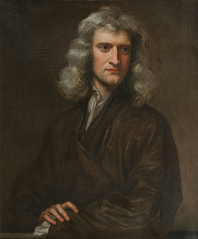

|  |
Isacc Newton
This article is about the scientist and mathematician. For the American agriculturalist, see Isaac Newton (agriculturalist).
Sir Isaac Newton PRS (25 December 1642 – 20 March 1726) was an English mathematician, physicist, astronomer,alchemist,theologian,
and author (described in his time as a "natural philosopher") widely recognised as one of the greatest mathematicians and physicists of
all time and among the most influential scientists. He was a key figure in the philosophical revolution known as the Enlightenment.
His book Philosophiæ Naturalis Principia Mathematica(Mathematical Principles of Natural Philosophy),
first published in 1687,established classical mechanics. Newton also made seminal contributions to optics,
and shares credit with German mathematician Gottfried Wilhelm Leibniz for developing infinitesimal calculus.
|